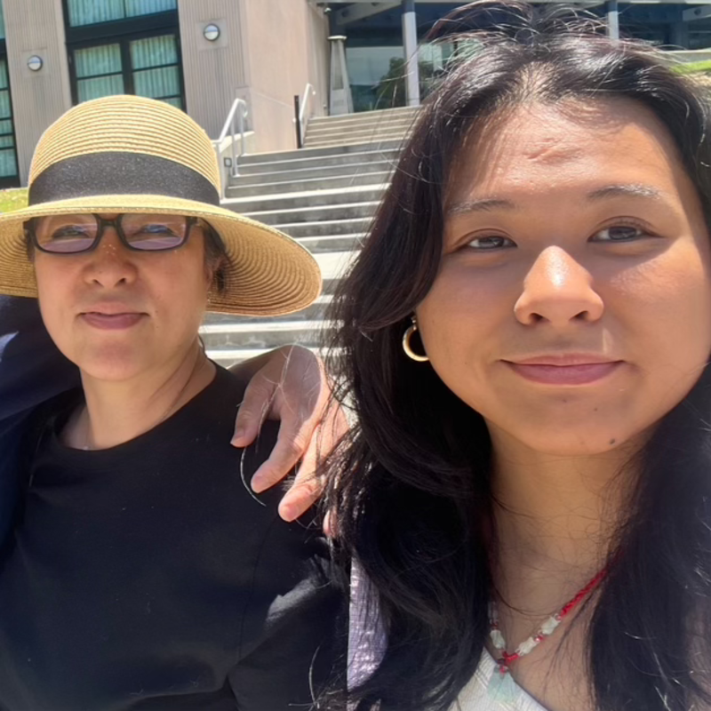
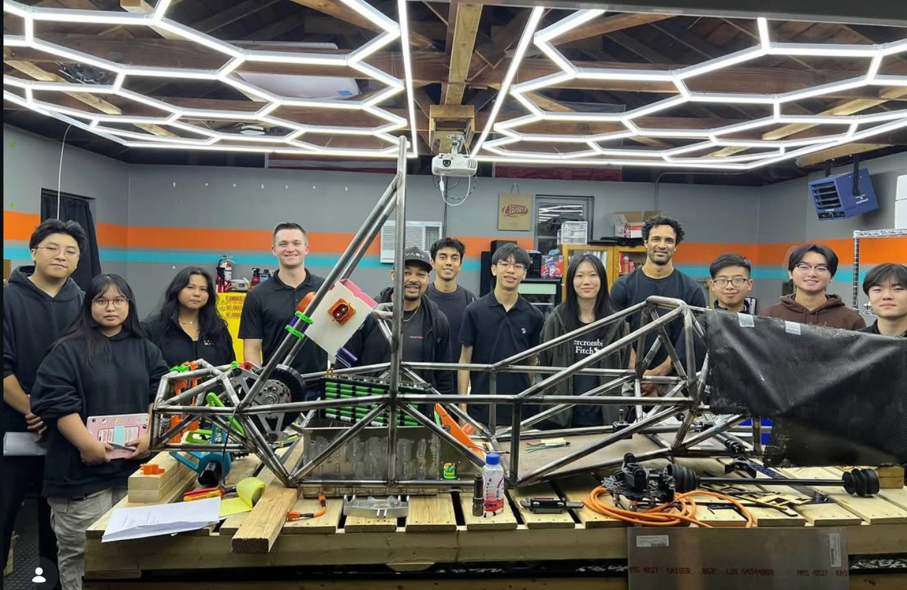

Katrina Gerona
Hi, I'm Katrina! I'm a third-year mechanical engineering student at the University of California, Irvine. I transferred from Pasadena City College, where I spent a year and a half as a student assistant for the Physics Department, modifying and maintaining the experimental equipment used in undergraduate labs. My interests focus on mechanical design, manufacturability, and hands-on engineering systems.
I formerly served as chassis lead engineer for Caltech Racing (Formula SAE EV). I oversaw subsystem integration for our legacy chassis platform: reviewing suspension and mounting modifications, defining dimensional constraints, and applying GD&T principles to ensure manufacturability and proper interface alignment across vehicle systems.
- UC IrvineB.S. Mechanical Engineering, in progress
- Caltech Racing · Formula SAE EV · 2024–2026Chassis Lead Engineer
- Pasadena City College · Physics Dept.Physics Lab Assistant
- IPAC, Caltech · Jan–Apr 2025Research on high-redshift galaxies (Python photometry pipelines for JWST/ALMA data)
- NASA NPWEE · Fall 2024Lunar Seismic Spectrometer System proposal; review board chair
- GuitarCat · 2021–presentOwner, guitar electronics and vintage audio restoration

Technical skills
SolidWorks, Siemens NX
ANSYS
3D printing, CAM (SolidCAM, Mastercam), laser cutting
MATLAB, Python, C++, LISP
Project management, technical documentation, prototyping, proposals